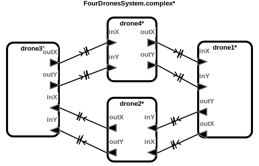
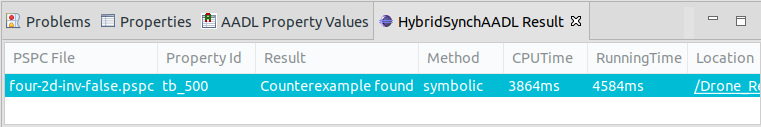

Rendezvous Drones with Single-Integrator
This benchmark models represent the rendezvous control of distributed drones with single-integrator dynamics. Each drone sends its own position and sets a proper velocity. The goal of these models is for all drones to arrive near a common location simultaneously without any collision.
Download
You can download the benchmark models: Drone_Rendezvous_Single.zip
Top-Level Components
We provide six cases of benchmark model: two, three and four drone components moving in one or two dimensional plane.
Architecture

HybridSynchAADL Model: Controller and Environment
Controller.aadl
thread Drone1DControlThread
features
inX: in data port Base_Types::Float;
outX : out data port Base_Types::Float;
currX: in data port Base_Types::Float;
velX : out data port Base_Types::Float;
properties
Dispatch_Protocol => Periodic;
end Drone1DControlThread;
thread implementation Drone1DControlThread.impl
annex behavior_specification {**
variables
nx : Base_Types::Float;
states
init : initial complete state;
exec, output : state;
transitions
init -[on dispatch]-> exec;
exec -[abs(currX - inX) < 0.1]-> output {
velX := 0
};
exec -[otherwise]-> output {
nx := - #DroneSpec::A * (currX - inX);
if (nx > 1) velX := 2
elsif (nx > -0.1) velX := 0
else velX := -2
end if
};
output -[ ]-> init {
outX := currX
};
**};
end Drone1DControlThread.impl;
thread Drone2DControlThread extends Drone1DControlThread
features
inY: in data port Base_Types::Float;
outY : out data port Base_Types::Float;
currY: in data port Base_Types::Float;
velY : out data port Base_Types::Float;
properties
Dispatch_Protocol => Periodic;
end Drone2DControlThread;
thread implementation Drone2DControlThread.impl extends Drone1DControlThread.impl
annex behavior_specification {**
variables
nx : Base_Types::Float;
ny : Base_Types::Float;
states
init : initial complete state;
exec, output : state;
transitions
init -[on dispatch]-> exec;
exec -[abs(currX - inX) < 0.1 and abs(currY - inY) < 0.1]-> output {
velX := 0; velY := 0
};
exec -[otherwise]-> output {
nx := - #DroneSpec::A * (currX - inX);
ny := - #DroneSpec::A * (currY - inY);
if (nx > 1) velX := 2
elsif (nx > -0.1) velX := 0
else velX := -2
end if;
if (ny > 1) velY := 2
elsif (ny > -0.1) velY := 0
else velY := -2
end if
};
output -[ ]-> init {
outX := currX;
outY := currY
};
**};
end Drone2DControlThread.impl;
Environment.aadl
system Environment1D
features
currX : out data port Base_Types::Float;
velX : in data port Base_Types::Float;
properties
Hybrid_SynchAADL::isEnvironment => true;
end Environment1D;
system implementation Environment1D.impl
subcomponents
x : data Base_Types::Float;
dotx : data Base_Types::Float;
connections
C1: port x -> currX;
C2: port velX -> dotx;
properties
Hybrid_SynchAADL::ContinuousDynamics =>
"x(t) = ((0.001) * dotx * t) + x(0);";
end Environment1D.impl;
system Environment2D extends Environment1D
features
currY : out data port Base_Types::Float;
velY : in data port Base_Types::Float;
properties
Hybrid_SynchAADL::isEnvironment => true;
end Environment2D;
system implementation Environment2D.impl extends Environment1D.impl
subcomponents
y : data Base_Types::Float;
doty : data Base_Types::Float;
connections
C3: port y -> currY;
C4: port velY -> doty;
properties
Hybrid_SynchAADL::ContinuousDynamics =>
"x(t) = ((0.001) * dotx * t) + x(0); y(t) = ((0.001) * doty * t) + y(0);";
end Environment2D.impl;
Safety Requirement
We analyze the safety invariant property where drones do not collide up to bound 500 ms.
four-2d-inv-false.pspc:
proposition [initial] : abs(drone1.env.x - 0.0) < 0.1 and abs(drone1.env.y - 0.0) < 0.1 and
abs(drone2.env.x - 1.0) < 0.1 and abs(drone2.env.y - 1.0) < 0.1 and
abs(drone3.env.x - 2.0) < 0.1 and abs(drone3.env.y - 2.0) < 0.1 and
abs(drone4.env.x - 3.0) < 0.1 and abs(drone4.env.y - 3.0) < 0.1;
proposition [someClose] : (abs(drone1.env.x-drone2.env.x)<0.5 and abs(drone1.env.y-drone2.env.y)<0.5) or
(abs(drone1.env.x-drone3.env.x)<0.5 and abs(drone1.env.y-drone3.env.y)<0.5) or
(abs(drone1.env.x-drone4.env.x)<0.5 and abs(drone1.env.y-drone4.env.y)<0.5) or
(abs(drone2.env.x-drone3.env.x)<0.5 and abs(drone2.env.y-drone3.env.y)<0.5) or
(abs(drone2.env.x-drone4.env.x)<0.5 and abs(drone2.env.y-drone4.env.y)<0.5) or
(abs(drone3.env.x-drone4.env.x)<0.5 and abs(drone3.env.y-drone4.env.y)<0.5);
invariant [tb_500] : ?initial ==> not(?someClose) in time 500;
Analysis Results
